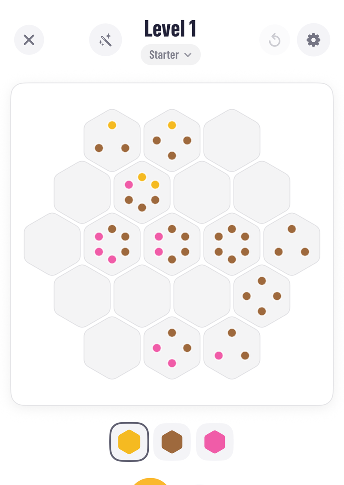
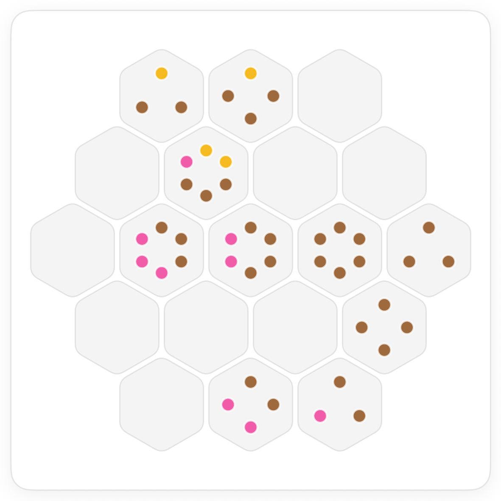
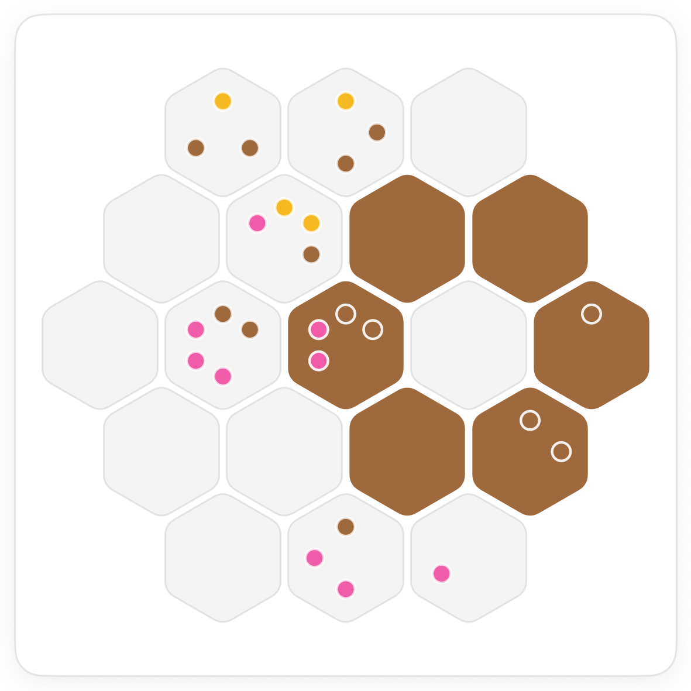
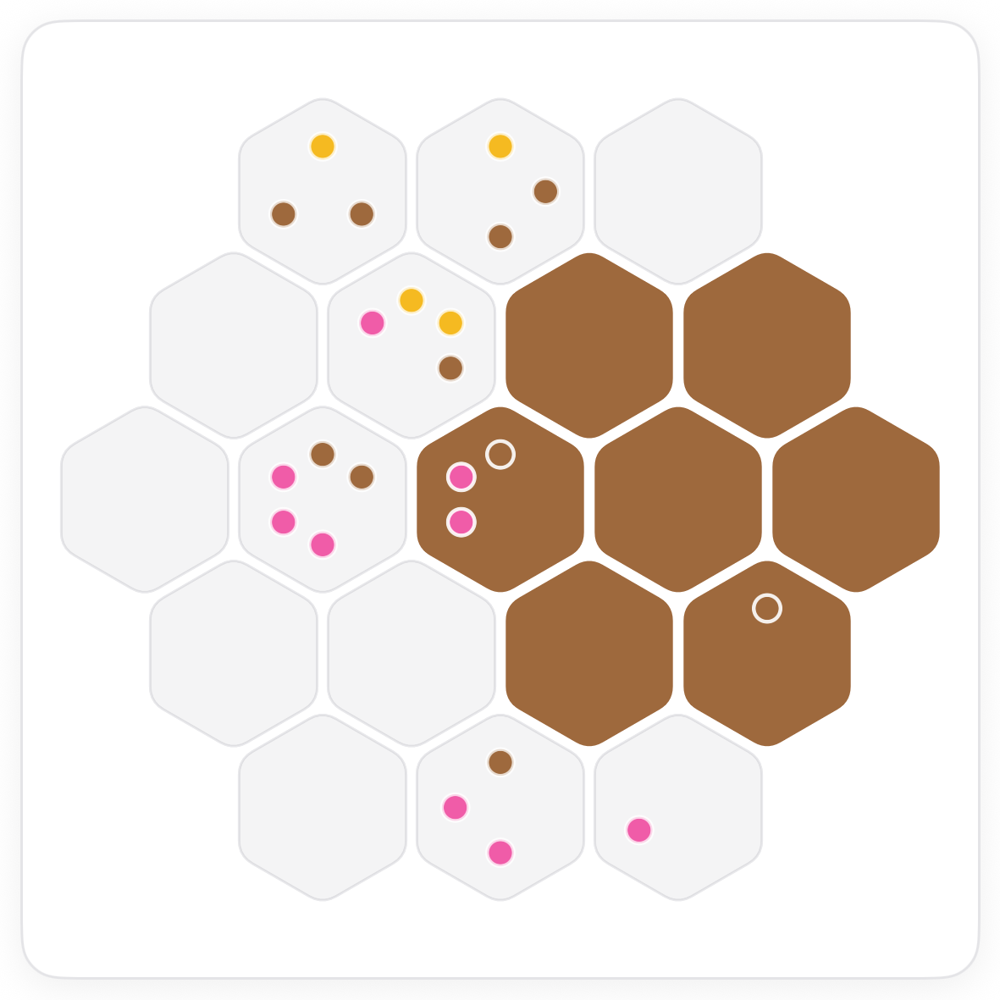
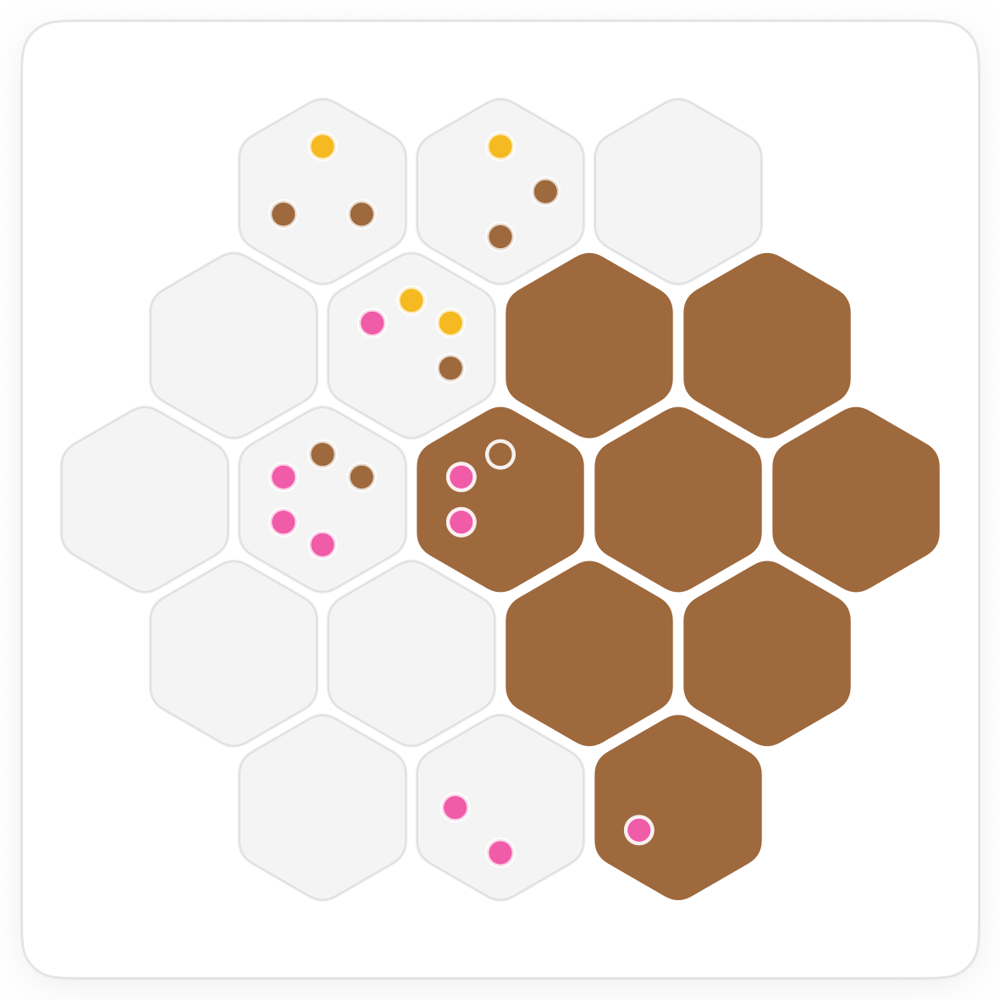

How to play Seeds.
Seeds is a colouring puzzle on a honeycomb. Some tiles carry seeds, and the seeds show exactly which colours the tiles around it have. Read the seeds, colour the neighbours, and the board grows outward from the surest tile.
The board.
A patch of hexagonal tiles, all empty, and three colours to choose from. Several tiles carry seeds: little coloured dots. A tile's seeds are the colours of the tiles that touch it, one seed per neighbour.

The rule.
Pick a colour on the palette, then tap tiles to colour them. Each gem you place spends a matching seed on the tiles next to it, so the seeds count down as you go.
Start with a tile whose seeds are all one colour.
If every seed on a tile is the same colour, every neighbour is that colour. Six seeds of one colour on a tile with six neighbours is the surest start on any board.




Common questions.
What if a tile has no seeds?
Then nothing is known about its neighbours from that tile. Its own colour still shows up as a seed on the tiles around it, so work from those.
Can two neighbouring tiles be the same colour?
Yes. Seeds only describe colours, there is no rule against neighbours matching. On this board a whole ring is brown.